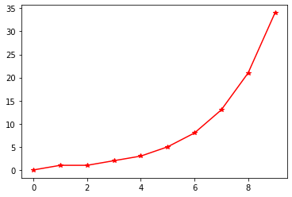

<!DOCTYPE html>

<html>
  <head>
    <meta charset="utf-8" />
    <meta name="viewport" content="width=device-width, initial-scale=1.0" />
    <title>Magic commands &#8212; Taller Python</title>
    
  <link rel="stylesheet" href="../_static/css/index.f658d18f9b420779cfdf24aa0a7e2d77.css">

    
  <link rel="stylesheet"
    href="../_static/vendor/fontawesome/5.13.0/css/all.min.css">
  <link rel="preload" as="font" type="font/woff2" crossorigin
    href="../_static/vendor/fontawesome/5.13.0/webfonts/fa-solid-900.woff2">
  <link rel="preload" as="font" type="font/woff2" crossorigin
    href="../_static/vendor/fontawesome/5.13.0/webfonts/fa-brands-400.woff2">

    
      
  <link rel="stylesheet"
    href="../_static/vendor/open-sans_all/1.44.1/index.css">
  <link rel="stylesheet"
    href="../_static/vendor/lato_latin-ext/1.44.1/index.css">

    
    <link rel="stylesheet" href="../_static/pygments.css" type="text/css" />
    <link rel="stylesheet" href="../_static/sphinx-book-theme.40e2e510f6b7d1648584402491bb10fe.css" type="text/css" />
    <link rel="stylesheet" type="text/css" href="../_static/togglebutton.css" />
    <link rel="stylesheet" type="text/css" href="../_static/copybutton.css" />
    <link rel="stylesheet" type="text/css" href="../_static/mystnb.css" />
    <link rel="stylesheet" type="text/css" href="../_static/sphinx-thebe.css" />
    <link rel="stylesheet" type="text/css" href="../_static/panels-main.c949a650a448cc0ae9fd3441c0e17fb0.css" />
    <link rel="stylesheet" type="text/css" href="../_static/panels-variables.06eb56fa6e07937060861dad626602ad.css" />
    
  <link rel="preload" as="script" href="../_static/js/index.d3f166471bb80abb5163.js">

    <script id="documentation_options" data-url_root="../" src="../_static/documentation_options.js"></script>
    <script src="../_static/jquery.js"></script>
    <script src="../_static/underscore.js"></script>
    <script src="../_static/doctools.js"></script>
    <script src="../_static/togglebutton.js"></script>
    <script src="../_static/clipboard.min.js"></script>
    <script src="../_static/copybutton.js"></script>
    <script >var togglebuttonSelector = '.toggle, .admonition.dropdown, .tag_hide_input div.cell_input, .tag_hide-input div.cell_input, .tag_hide_output div.cell_output, .tag_hide-output div.cell_output, .tag_hide_cell.cell, .tag_hide-cell.cell';</script>
    <script src="../_static/sphinx-book-theme.d31b09fe5c1d09cb49b26a786de4a05d.js"></script>
    <script async="async" src="https://cdnjs.cloudflare.com/ajax/libs/mathjax/2.7.7/latest.js?config=TeX-AMS-MML_HTMLorMML"></script>
    <script type="text/x-mathjax-config">MathJax.Hub.Config({"tex2jax": {"inlineMath": [["\\(", "\\)"]], "displayMath": [["\\[", "\\]"]], "processRefs": false, "processEnvironments": false}})</script>
    <script src="https://cdnjs.cloudflare.com/ajax/libs/require.js/2.3.4/require.min.js"></script>
    <script src="https://unpkg.com/@jupyter-widgets/html-manager@^0.20.0/dist/embed-amd.js"></script>
    <script async="async" src="https://unpkg.com/thebelab@latest/lib/index.js"></script>
    <script >
        const thebe_selector = ".thebe,.cell"
        const thebe_selector_input = "pre,.cell_input div.highlight"
        const thebe_selector_output = ".output,.cell_output"
    </script>
    <script async="async" src="../_static/sphinx-thebe.js"></script>
    <link rel="index" title="Index" href="../genindex.html" />
    <link rel="search" title="Search" href="../search.html" />
    <link rel="next" title="Números de Fibonnacci complejos" href="cfibonacci.html" />
    <link rel="prev" title="Comándos mágicos" href="magics.html" />

    <meta name="viewport" content="width=device-width, initial-scale=1" />
    <meta name="docsearch:language" content="en" />


  </head>
  <body data-spy="scroll" data-target="#bd-toc-nav" data-offset="80">
    

    <div class="container-xl">
      <div class="row">
          
<div class="col-12 col-md-3 bd-sidebar site-navigation show" id="site-navigation">
    
        <div class="navbar-brand-box">
<a class="navbar-brand text-wrap" href="../index.html">
  
  
  <h1 class="site-logo" id="site-title">Taller Python</h1>
  
</a>
</div><form class="bd-search d-flex align-items-center" action="../search.html" method="get">
  <i class="icon fas fa-search"></i>
  <input type="search" class="form-control" name="q" id="search-input" placeholder="Search this book..." aria-label="Search this book..." autocomplete="off" >
</form>
<nav class="bd-links" id="bd-docs-nav" aria-label="Main navigation">
    <ul class="nav sidenav_l1">
 <li class="toctree-l1">
  <a class="reference internal" href="../intro.html">
   Taller de análisis de datos con Python
  </a>
 </li>
</ul>
<p class="caption collapsible-parent">
 <span class="caption-text">
  Instalación
 </span>
</p>
<ul class="nav sidenav_l1">
 <li class="toctree-l1">
  <a class="reference internal" href="../install.html">
   Taller de análisis de datos con Python
  </a>
 </li>
</ul>
<p class="caption collapsible-parent">
 <span class="caption-text">
  Python y Jupyter
 </span>
</p>
<ul class="current nav sidenav_l1">
 <li class="toctree-l1">
  <a class="reference internal" href="python.html">
   Python
  </a>
 </li>
 <li class="toctree-l1">
  <a class="reference internal" href="sec2.html">
   Jupyter
  </a>
 </li>
 <li class="toctree-l1">
  <a class="reference internal" href="ide.html">
   Entornos de desarrollo
  </a>
 </li>
 <li class="toctree-l1">
  <a class="reference internal" href="jupyter.html">
   Anatomía de Jupyter
  </a>
 </li>
 <li class="toctree-l1">
  <a class="reference internal" href="Fibonacci.html">
   Números de Fibonnacci
  </a>
 </li>
 <li class="toctree-l1">
  <a class="reference internal" href="magics.html">
   Comándos mágicos
  </a>
 </li>
 <li class="toctree-l1 current active">
  <a class="current reference internal" href="#">
   Magic commands
  </a>
 </li>
 <li class="toctree-l1">
  <a class="reference internal" href="cfibonacci.html">
   Números de Fibonnacci complejos
  </a>
 </li>
 <li class="toctree-l1">
  <a class="reference internal" href="jremote.html">
   Ejecución remota de cuadernos
  </a>
 </li>
</ul>
<p class="caption collapsible-parent">
 <span class="caption-text">
  Numpy
 </span>
</p>
<ul class="nav sidenav_l1">
 <li class="toctree-l1">
  <a class="reference internal" href="../cap2/intro.html">
   Numpy
  </a>
 </li>
 <li class="toctree-l1">
  <a class="reference internal" href="../cap2/datos.html">
   Tipos de datos
  </a>
 </li>
 <li class="toctree-l1">
  <a class="reference internal" href="../cap2/base0.html">
   Estructura básica
  </a>
 </li>
 <li class="toctree-l1">
  <a class="reference internal" href="../cap2/base.html">
   Estructura de un
   <code class="docutils literal notranslate">
    <span class="pre">
     ndarray
    </span>
   </code>
  </a>
 </li>
 <li class="toctree-l1">
  <a class="reference internal" href="../cap2/ufunc.html">
   Funciones universales
  </a>
 </li>
 <li class="toctree-l1">
  <a class="reference internal" href="../cap2/broadcast.html">
   <em>
    Broadcasting
   </em>
  </a>
 </li>
 <li class="toctree-l1">
  <a class="reference internal" href="../cap2/mask.html">
   Comparaciones y máscaras booleanas
  </a>
 </li>
 <li class="toctree-l1">
  <a class="reference internal" href="../cap2/indexing.html">
   Uso avanzado de índices
  </a>
 </li>
 <li class="toctree-l1">
  <a class="reference internal" href="../cap2/structured.html">
   Arrays estructurados
  </a>
 </li>
</ul>
<p class="caption collapsible-parent">
 <span class="caption-text">
  Matplotlib
 </span>
</p>
<ul class="nav sidenav_l1">
 <li class="toctree-l1">
  <a class="reference internal" href="../cap3/intro.html">
   Matplotlib
  </a>
 </li>
 <li class="toctree-l1">
  <a class="reference internal" href="../cap3/linea.html">
   Gráficos de línea
  </a>
 </li>
 <li class="toctree-l1">
  <a class="reference internal" href="../cap3/disp.html">
   Gráficos de puntos
  </a>
 </li>
 <li class="toctree-l1">
  <a class="reference internal" href="../cap3/disp.html#graficos-con-scatter">
   Gráficos con
   <code class="docutils literal notranslate">
    <span class="pre">
     scatter
    </span>
   </code>
  </a>
 </li>
 <li class="toctree-l1">
  <a class="reference internal" href="../cap3/error.html">
   Visualización de errores
  </a>
 </li>
 <li class="toctree-l1">
  <a class="reference internal" href="../cap3/estilos.html">
   Uso de estilos
  </a>
 </li>
 <li class="toctree-l1">
  <a class="reference internal" href="../cap3/plotly.html">
   Plotly
  </a>
 </li>
</ul>

</nav> <!-- To handle the deprecated key -->

<div class="navbar_extra_footer">
  Powered by <a href="https://jupyterbook.org">Jupyter Book</a>
</div>

</div>


          


          
<main class="col py-md-3 pl-md-4 bd-content overflow-auto" role="main">
    
    <div class="row topbar fixed-top container-xl">
    <div class="col-12 col-md-3 bd-topbar-whitespace site-navigation show">
    </div>
    <div class="col pl-2 topbar-main">
        
        <button id="navbar-toggler" class="navbar-toggler ml-0" type="button" data-toggle="collapse"
            data-toggle="tooltip" data-placement="bottom" data-target=".site-navigation" aria-controls="navbar-menu"
            aria-expanded="true" aria-label="Toggle navigation" aria-controls="site-navigation"
            title="Toggle navigation" data-toggle="tooltip" data-placement="left">
            <i class="fas fa-bars"></i>
            <i class="fas fa-arrow-left"></i>
            <i class="fas fa-arrow-up"></i>
        </button>
        
        
<div class="dropdown-buttons-trigger">
    <button id="dropdown-buttons-trigger" class="btn btn-secondary topbarbtn" aria-label="Download this page"><i
            class="fas fa-download"></i></button>

    <div class="dropdown-buttons">
        <!-- ipynb file if we had a myst markdown file -->
        
        <!-- Download raw file -->
        <a class="dropdown-buttons" href="../_sources/cap1/magicmd.ipynb"><button type="button"
                class="btn btn-secondary topbarbtn" title="Download source file" data-toggle="tooltip"
                data-placement="left">.ipynb</button></a>
        <!-- Download PDF via print -->
        <button type="button" id="download-print" class="btn btn-secondary topbarbtn" title="Print to PDF"
            onClick="window.print()" data-toggle="tooltip" data-placement="left">.pdf</button>
    </div>
</div>

        <!-- Source interaction buttons -->


        <!-- Full screen (wrap in <a> to have style consistency -->
        <a class="full-screen-button"><button type="button" class="btn btn-secondary topbarbtn" data-toggle="tooltip"
                data-placement="bottom" onclick="toggleFullScreen()" aria-label="Fullscreen mode"
                title="Fullscreen mode"><i
                    class="fas fa-expand"></i></button></a>

        <!-- Launch buttons -->

<div class="dropdown-buttons-trigger">
    <button id="dropdown-buttons-trigger" class="btn btn-secondary topbarbtn"
        aria-label="Launch interactive content"><i class="fas fa-rocket"></i></button>
    <div class="dropdown-buttons">
        
        <a class="binder-button" href="https://mybinder.org/v2/gh/sergiopasra/taller-python-tools/main?urlpath=tree/ptools/cap1/magicmd.ipynb"><button type="button"
                class="btn btn-secondary topbarbtn" title="Launch Binder" data-toggle="tooltip"
                data-placement="left">Binder</button></a>
        
        
        
        <button type="button" class="btn btn-secondary topbarbtn"
            onclick="initThebeSBT()" title="Launch Thebe" data-toggle="tooltip" data-placement="left"><i
                class="fas fa-play"></i><span style="margin-left: .4em;">Live Code</span></button>
        
    </div>
</div>

    </div>

    <!-- Table of contents -->
    <div class="d-none d-md-block col-md-2 bd-toc show">
        
    </div>
</div>
    <div id="main-content" class="row">
        <div class="col-12 col-md-9 pl-md-3 pr-md-0">
        
              <div>
                
  <div class="section" id="magic-commands">
<h1>Magic commands<a class="headerlink" href="#magic-commands" title="Permalink to this headline">¶</a></h1>
<p>Podemos listar los momandos disponibles con:</p>
<div class="cell docutils container">
<div class="cell_input docutils container">
<div class="highlight-ipython3 notranslate"><div class="highlight"><pre><span></span><span class="o">%</span><span class="k">lsmagic</span>
</pre></div>
</div>
</div>
<div class="cell_output docutils container">
<div class="output text_plain highlight-myst-ansi notranslate"><div class="highlight"><pre><span></span>Available line magics:
%alias  %alias_magic  %autoawait  %autocall  %automagic  %autosave  %bookmark  %cat  %cd  %clear  %colors  %conda  %config  %connect_info  %cp  %debug  %dhist  %dirs  %doctest_mode  %ed  %edit  %env  %gui  %hist  %history  %killbgscripts  %ldir  %less  %lf  %lk  %ll  %load  %load_ext  %loadpy  %logoff  %logon  %logstart  %logstate  %logstop  %ls  %lsmagic  %lx  %macro  %magic  %man  %matplotlib  %mkdir  %more  %mv  %notebook  %page  %pastebin  %pdb  %pdef  %pdoc  %pfile  %pinfo  %pinfo2  %pip  %popd  %pprint  %precision  %prun  %psearch  %psource  %pushd  %pwd  %pycat  %pylab  %qtconsole  %quickref  %recall  %rehashx  %reload_ext  %rep  %rerun  %reset  %reset_selective  %rm  %rmdir  %run  %save  %sc  %set_env  %store  %sx  %system  %tb  %time  %timeit  %unalias  %unload_ext  %who  %who_ls  %whos  %xdel  %xmode

Available cell magics:
%%!  %%HTML  %%SVG  %%bash  %%capture  %%debug  %%file  %%html  %%javascript  %%js  %%latex  %%markdown  %%perl  %%prun  %%pypy  %%python  %%python2  %%python3  %%ruby  %%script  %%sh  %%svg  %%sx  %%system  %%time  %%timeit  %%writefile

Automagic is ON, % prefix IS NOT needed for line magics.
</pre></div>
</div>
</div>
</div>
<p>Algunos comandos son interactivos:</p>
<div class="cell docutils container">
<div class="cell_input docutils container">
<div class="highlight-ipython3 notranslate"><div class="highlight"><pre><span></span><span class="o">%</span><span class="k">quickref</span>
</pre></div>
</div>
</div>
</div>
<p>Y podemos cargar la ayuda de un comando añadiendo <code class="docutils literal notranslate"><span class="pre">?</span></code> al final de su nombre</p>
<div class="cell docutils container">
<div class="cell_input docutils container">
<div class="highlight-ipython3 notranslate"><div class="highlight"><pre><span></span><span class="o">%</span><span class="k">macro</span><span class="o">?</span>
</pre></div>
</div>
</div>
</div>
<div class="cell docutils container">
<div class="cell_input docutils container">
<div class="highlight-ipython3 notranslate"><div class="highlight"><pre><span></span><span class="o">%</span><span class="k">env</span>
</pre></div>
</div>
</div>
<div class="cell_output docutils container">
<div class="output text_plain highlight-myst-ansi notranslate"><div class="highlight"><pre><span></span>{&#39;SELENIUM_JAR_PATH&#39;: &#39;/usr/share/java/selenium-server-standalone.jar&#39;,
 &#39;CONDA&#39;: &#39;/usr/share/miniconda&#39;,
 &#39;GITHUB_WORKSPACE&#39;: &#39;/home/runner/work/taller-python-tools/taller-python-tools&#39;,
 &#39;JAVA_HOME_11_X64&#39;: &#39;/usr/lib/jvm/adoptopenjdk-11-hotspot-amd64&#39;,
 &#39;GITHUB_PATH&#39;: &#39;/home/runner/work/_temp/_runner_file_commands/add_path_d34ec472-56bb-4c9a-9da8-2878550366f3&#39;,
 &#39;GITHUB_ACTION&#39;: &#39;run2&#39;,
 &#39;JAVA_HOME&#39;: &#39;/usr/lib/jvm/adoptopenjdk-11-hotspot-amd64&#39;,
 &#39;GITHUB_RUN_NUMBER&#39;: &#39;21&#39;,
 &#39;GRADLE_HOME&#39;: &#39;/usr/share/gradle&#39;,
 &#39;DOTNET_SKIP_FIRST_TIME_EXPERIENCE&#39;: &#39;1&#39;,
 &#39;ANT_HOME&#39;: &#39;/usr/share/ant&#39;,
 &#39;JAVA_HOME_8_X64&#39;: &#39;/usr/lib/jvm/adoptopenjdk-8-hotspot-amd64&#39;,
 &#39;HOMEBREW_PREFIX&#39;: &#39;&quot;/home/linuxbrew/.linuxbrew&quot;&#39;,
 &#39;pythonLocation&#39;: &#39;/opt/hostedtoolcache/Python/3.8.7/x64&#39;,
 &#39;HOMEBREW_CLEANUP_PERIODIC_FULL_DAYS&#39;: &#39;3650&#39;,
 &#39;PWD&#39;: &#39;/home/runner/work/taller-python-tools/taller-python-tools&#39;,
 &#39;PIPX_BIN_DIR&#39;: &#39;/opt/pipx_bin&#39;,
 &#39;DEPLOYMENT_BASEPATH&#39;: &#39;/opt/runner&#39;,
 &#39;GITHUB_ACTIONS&#39;: &#39;true&#39;,
 &#39;ANDROID_NDK_LATEST_HOME&#39;: &#39;/usr/local/lib/android/sdk/ndk/22.0.7026061&#39;,
 &#39;GITHUB_SHA&#39;: &#39;f7ef6fb70b6096946c45d7068f5edde87ed2a4b6&#39;,
 &#39;POWERSHELL_DISTRIBUTION_CHANNEL&#39;: &#39;GitHub-Actions-ubuntu20&#39;,
 &#39;DOTNET_MULTILEVEL_LOOKUP&#39;: &#39;0&#39;,
 &#39;GITHUB_REF&#39;: &#39;refs/heads/main&#39;,
 &#39;RUNNER_OS&#39;: &#39;Linux&#39;,
 &#39;HOME&#39;: &#39;/home/runner&#39;,
 &#39;GITHUB_API_URL&#39;: &#39;https://api.github.com&#39;,
 &#39;LANG&#39;: &#39;C.UTF-8&#39;,
 &#39;RUNNER_TRACKING_ID&#39;: &#39;github_a3d3ea5a-80cd-42d8-9942-e49313ce78ed&#39;,
 &#39;RUNNER_TEMP&#39;: &#39;/home/runner/work/_temp&#39;,
 &#39;M2_HOME&#39;: &#39;/usr/share/apache-maven-3.6.3&#39;,
 &#39;GITHUB_ENV&#39;: &#39;/home/runner/work/_temp/_runner_file_commands/set_env_d34ec472-56bb-4c9a-9da8-2878550366f3&#39;,
 &#39;GITHUB_EVENT_PATH&#39;: &#39;/home/runner/work/_temp/_github_workflow/event.json&#39;,
 &#39;INVOCATION_ID&#39;: &#39;c78dcbc39dc647c38550ef4b741ec483&#39;,
 &#39;GITHUB_EVENT_NAME&#39;: &#39;push&#39;,
 &#39;GITHUB_RUN_ID&#39;: &#39;555091847&#39;,
 &#39;GOROOT&#39;: &#39;/opt/hostedtoolcache/go/1.15.8/x64&#39;,
 &#39;ANDROID_NDK_HOME&#39;: &#39;/usr/local/lib/android/sdk/ndk-bundle&#39;,
 &#39;HOMEBREW_NO_AUTO_UPDATE&#39;: &#39;1&#39;,
 &#39;GITHUB_ACTOR&#39;: &#39;sergiopasra&#39;,
 &#39;ANDROID_HOME&#39;: &#39;/usr/local/lib/android/sdk&#39;,
 &#39;GOROOT_1_14_X64&#39;: &#39;/opt/hostedtoolcache/go/1.14.15/x64&#39;,
 &#39;GITHUB_GRAPHQL_URL&#39;: &#39;https://api.github.com/graphql&#39;,
 &#39;RUNNER_USER&#39;: &#39;runner&#39;,
 &#39;USER&#39;: &#39;runner&#39;,
 &#39;GITHUB_SERVER_URL&#39;: &#39;https://github.com&#39;,
 &#39;HOMEBREW_CELLAR&#39;: &#39;&quot;/home/linuxbrew/.linuxbrew/Cellar&quot;&#39;,
 &#39;PIPX_HOME&#39;: &#39;/opt/pipx&#39;,
 &#39;GECKOWEBDRIVER&#39;: &#39;/usr/local/share/gecko_driver&#39;,
 &#39;CHROMEWEBDRIVER&#39;: &#39;/usr/local/share/chrome_driver&#39;,
 &#39;SHLVL&#39;: &#39;1&#39;,
 &#39;ANDROID_SDK_ROOT&#39;: &#39;/usr/local/lib/android/sdk&#39;,
 &#39;VCPKG_INSTALLATION_ROOT&#39;: &#39;/usr/local/share/vcpkg&#39;,
 &#39;HOMEBREW_REPOSITORY&#39;: &#39;&quot;/home/linuxbrew/.linuxbrew/Homebrew&quot;&#39;,
 &#39;RUNNER_TOOL_CACHE&#39;: &#39;/opt/hostedtoolcache&#39;,
 &#39;ImageVersion&#39;: &#39;20210208.0&#39;,
 &#39;DOTNET_NOLOGO&#39;: &#39;1&#39;,
 &#39;GRAALVM_11_ROOT&#39;: &#39;/usr/local/graalvm/graalvm-ce-java11-21.0.0&#39;,
 &#39;GITHUB_JOB&#39;: &#39;deploy-book&#39;,
 &#39;AZURE_EXTENSION_DIR&#39;: &#39;/opt/az/azcliextensions&#39;,
 &#39;PERFLOG_LOCATION_SETTING&#39;: &#39;RUNNER_PERFLOG&#39;,
 &#39;GITHUB_REPOSITORY&#39;: &#39;sergiopasra/taller-python-tools&#39;,
 &#39;CHROME_BIN&#39;: &#39;/usr/bin/google-chrome&#39;,
 &#39;ANDROID_NDK_ROOT&#39;: &#39;/usr/local/lib/android/sdk/ndk-bundle&#39;,
 &#39;GITHUB_RETENTION_DAYS&#39;: &#39;90&#39;,
 &#39;JOURNAL_STREAM&#39;: &#39;9:20106&#39;,
 &#39;RUNNER_WORKSPACE&#39;: &#39;/home/runner/work/taller-python-tools&#39;,
 &#39;LEIN_HOME&#39;: &#39;/usr/local/lib/lein&#39;,
 &#39;LEIN_JAR&#39;: &#39;/usr/local/lib/lein/self-installs/leiningen-2.9.5-standalone.jar&#39;,
 &#39;GITHUB_ACTION_REPOSITORY&#39;: &#39;&#39;,
 &#39;PATH&#39;: &#39;/opt/hostedtoolcache/Python/3.8.7/x64/bin:/opt/hostedtoolcache/Python/3.8.7/x64:/home/linuxbrew/.linuxbrew/bin:/home/linuxbrew/.linuxbrew/sbin:/opt/pipx_bin:/usr/share/rust/.cargo/bin:/home/runner/.config/composer/vendor/bin:/home/runner/.dotnet/tools:/snap/bin:/usr/local/sbin:/usr/local/bin:/usr/sbin:/usr/bin:/sbin:/bin:/usr/games:/usr/local/games:/snap/bin&#39;,
 &#39;RUNNER_PERFLOG&#39;: &#39;/home/runner/perflog&#39;,
 &#39;GITHUB_BASE_REF&#39;: &#39;&#39;,
 &#39;CI&#39;: &#39;true&#39;,
 &#39;SWIFT_PATH&#39;: &#39;/usr/share/swift/usr/bin&#39;,
 &#39;ImageOS&#39;: &#39;ubuntu20&#39;,
 &#39;GITHUB_REPOSITORY_OWNER&#39;: &#39;sergiopasra&#39;,
 &#39;GITHUB_HEAD_REF&#39;: &#39;&#39;,
 &#39;GITHUB_ACTION_REF&#39;: &#39;&#39;,
 &#39;GITHUB_WORKFLOW&#39;: &#39;deploy-book&#39;,
 &#39;DEBIAN_FRONTEND&#39;: &#39;noninteractive&#39;,
 &#39;GOROOT_1_15_X64&#39;: &#39;/opt/hostedtoolcache/go/1.15.8/x64&#39;,
 &#39;AGENT_TOOLSDIRECTORY&#39;: &#39;/opt/hostedtoolcache&#39;,
 &#39;_&#39;: &#39;/opt/hostedtoolcache/Python/3.8.7/x64/bin/jupyter-book&#39;,
 &#39;JPY_PARENT_PID&#39;: &#39;1615&#39;,
 &#39;TERM&#39;: &#39;xterm-color&#39;,
 &#39;CLICOLOR&#39;: &#39;1&#39;,
 &#39;PAGER&#39;: &#39;cat&#39;,
 &#39;GIT_PAGER&#39;: &#39;cat&#39;,
 &#39;MPLBACKEND&#39;: &#39;module://ipykernel.pylab.backend_inline&#39;}
</pre></div>
</div>
</div>
</div>
<p><code class="docutils literal notranslate"><span class="pre">%run</span></code> permite ejecutar otros cuadernos. Las variables pasan a estar definidas dentro del cuaderno presente</p>
<div class="cell docutils container">
<div class="cell_input docutils container">
<div class="highlight-ipython3 notranslate"><div class="highlight"><pre><span></span><span class="o">%</span><span class="k">run</span> Fibonacci.ipynb
</pre></div>
</div>
</div>
<div class="cell_output docutils container">

</div>
</div>
<div class="cell docutils container">
<div class="cell_input docutils container">
<div class="highlight-ipython3 notranslate"><div class="highlight"><pre><span></span><span class="n">fib</span>
</pre></div>
</div>
</div>
<div class="cell_output docutils container">
<div class="output text_plain highlight-myst-ansi notranslate"><div class="highlight"><pre><span></span>&lt;function __main__.fib(n: int)&gt;
</pre></div>
</div>
</div>
</div>
<p>Podemos ver funciones y variables definidas con <code class="docutils literal notranslate"><span class="pre">%who</span></code> y <code class="docutils literal notranslate"><span class="pre">%whos</span></code></p>
<div class="cell docutils container">
<div class="cell_input docutils container">
<div class="highlight-ipython3 notranslate"><div class="highlight"><pre><span></span><span class="o">%</span><span class="k">who</span>
</pre></div>
</div>
</div>
<div class="cell_output docutils container">
<div class="output stream highlight-myst-ansi notranslate"><div class="highlight"><pre><span></span>fib	 fibs	 ns	 plt	 
</pre></div>
</div>
</div>
</div>
<div class="cell docutils container">
<div class="cell_input docutils container">
<div class="highlight-ipython3 notranslate"><div class="highlight"><pre><span></span><span class="o">%</span><span class="k">whos</span>
</pre></div>
</div>
</div>
<div class="cell_output docutils container">
<div class="output stream highlight-myst-ansi notranslate"><div class="highlight"><pre><span></span>Variable   Type        Data/Info
--------------------------------
fib        function    &lt;function fib at 0x7fa5ad5d2820&gt;
fibs       list        n=10
ns         range       range(0, 10)
plt        module      &lt;module &#39;matplotlib.pyplo&lt;...&gt;es/matplotlib/pyplot.py&#39;&gt;
</pre></div>
</div>
</div>
</div>
<p>Vamos a usar <code class="docutils literal notranslate"><span class="pre">%timeit</span></code> para comparar la velocidad de ejecuión de la versión simple de <code class="docutils literal notranslate"><span class="pre">fib</span></code> con la fórmula de Binet</p>
<div class="cell docutils container">
<div class="cell_input docutils container">
<div class="highlight-ipython3 notranslate"><div class="highlight"><pre><span></span><span class="kn">import</span> <span class="nn">math</span>

<span class="n">SQRT5</span> <span class="o">=</span> <span class="n">math</span><span class="o">.</span><span class="n">sqrt</span><span class="p">(</span><span class="mi">5</span><span class="p">)</span>
<span class="n">PHI</span> <span class="o">=</span> <span class="p">(</span><span class="mi">1</span> <span class="o">+</span> <span class="n">SQRT5</span><span class="p">)</span> <span class="o">/</span> <span class="mi">2</span>

<span class="k">def</span> <span class="nf">fibbn</span><span class="p">(</span><span class="n">n</span><span class="p">):</span>
    <span class="sd">&quot;&quot;&quot;Fibonacci number, Binet&#39;s formula&quot;&quot;&quot;</span>
    <span class="k">return</span> <span class="nb">round</span><span class="p">((</span><span class="n">PHI</span><span class="o">**</span><span class="n">n</span> <span class="o">-</span> <span class="p">(</span><span class="mi">1</span><span class="o">-</span><span class="n">PHI</span><span class="p">)</span><span class="o">**</span><span class="n">n</span><span class="p">)</span><span class="o">/</span><span class="n">SQRT5</span><span class="p">)</span>
</pre></div>
</div>
</div>
</div>
<div class="cell docutils container">
<div class="cell_input docutils container">
<div class="highlight-ipython3 notranslate"><div class="highlight"><pre><span></span><span class="o">%</span><span class="k">timeit</span> fibbn(20)
</pre></div>
</div>
</div>
<div class="cell_output docutils container">
<div class="output stream highlight-myst-ansi notranslate"><div class="highlight"><pre><span></span>526 ns ± 7.53 ns per loop (mean ± std. dev. of 7 runs, 1000000 loops each)
</pre></div>
</div>
</div>
</div>
<div class="cell docutils container">
<div class="cell_input docutils container">
<div class="highlight-ipython3 notranslate"><div class="highlight"><pre><span></span><span class="o">%</span><span class="k">timeit</span> fib(20)
</pre></div>
</div>
</div>
<div class="cell_output docutils container">
<div class="output stream highlight-myst-ansi notranslate"><div class="highlight"><pre><span></span>3.13 ms ± 76.8 µs per loop (mean ± std. dev. of 7 runs, 100 loops each)
</pre></div>
</div>
</div>
</div>
<p>Podemos llamar a comandos del sistema y alamacenar los resultados en variables</p>
<div class="cell docutils container">
<div class="cell_input docutils container">
<div class="highlight-ipython3 notranslate"><div class="highlight"><pre><span></span><span class="n">files</span> <span class="o">=</span> <span class="o">!</span>ls
<span class="nb">print</span><span class="p">(</span><span class="n">files</span><span class="p">)</span>
</pre></div>
</div>
</div>
<div class="cell_output docutils container">
<div class="output stream highlight-myst-ansi notranslate"><div class="highlight"><pre><span></span>[&#39;Fibonacci.ipynb&#39;, &#39;Magics.ipynb&#39;, &#39;SNIa_medidas.csv&#39;, &#39;cfibonacci.ipynb&#39;, &#39;ide.md&#39;, &#39;jconvert.md&#39;, &#39;jremote.md&#39;, &#39;jupyter.md&#39;, &#39;magicmd.ipynb&#39;, &#39;magics.md&#39;, &#39;prac_estat.ipynb&#39;, &#39;python.md&#39;, &#39;sec2.md&#39;, &#39;widgets.md&#39;]
</pre></div>
</div>
</div>
</div>
<div class="cell docutils container">
<div class="cell_input docutils container">
<div class="highlight-ipython3 notranslate"><div class="highlight"><pre><span></span><span class="o">%</span><span class="k">sx</span> ls
</pre></div>
</div>
</div>
<div class="cell_output docutils container">
<div class="output text_plain highlight-myst-ansi notranslate"><div class="highlight"><pre><span></span>[&#39;Fibonacci.ipynb&#39;,
 &#39;Magics.ipynb&#39;,
 &#39;SNIa_medidas.csv&#39;,
 &#39;cfibonacci.ipynb&#39;,
 &#39;ide.md&#39;,
 &#39;jconvert.md&#39;,
 &#39;jremote.md&#39;,
 &#39;jupyter.md&#39;,
 &#39;magicmd.ipynb&#39;,
 &#39;magics.md&#39;,
 &#39;prac_estat.ipynb&#39;,
 &#39;python.md&#39;,
 &#39;sec2.md&#39;,
 &#39;widgets.md&#39;]
</pre></div>
</div>
</div>
</div>
<div class="cell docutils container">
<div class="cell_input docutils container">
<div class="highlight-ipython3 notranslate"><div class="highlight"><pre><span></span><span class="o">%%</span><span class="k">bash</span>

for nm in *.md; do
    echo $nm
done
</pre></div>
</div>
</div>
<div class="cell_output docutils container">
<div class="output stream highlight-myst-ansi notranslate"><div class="highlight"><pre><span></span>ide.md
jconvert.md
jremote.md
jupyter.md
magics.md
python.md
sec2.md
widgets.md
</pre></div>
</div>
</div>
</div>
<p>Algunos paquetes proporcionan comandos mágicos adicionales.</p>
<p>Instalamos Cython para poder escribir directamente cython en las celdas y rpy2 para escribir R.</p>
<p>rpy2 permite además comunicar datos entre Python y R.</p>
<div class="cell docutils container">
<div class="cell_input docutils container">
<div class="highlight-ipython3 notranslate"><div class="highlight"><pre><span></span><span class="o">%</span><span class="k">pip</span> install Cython
<span class="c1"># %conda install Cython</span>
</pre></div>
</div>
</div>
<div class="cell_output docutils container">
<div class="output stream highlight-myst-ansi notranslate"><div class="highlight"><pre><span></span>Requirement already satisfied: Cython in /opt/hostedtoolcache/Python/3.8.7/x64/lib/python3.8/site-packages (0.29.21)
</pre></div>
</div>
<div class="output stream highlight-myst-ansi notranslate"><div class="highlight"><pre><span></span>Note: you may need to restart the kernel to use updated packages.
</pre></div>
</div>
</div>
</div>
<div class="cell docutils container">
<div class="cell_input docutils container">
<div class="highlight-ipython3 notranslate"><div class="highlight"><pre><span></span><span class="c1"># Cargando un &quot;cell magic&quot; proprocionado por Cython</span>
<span class="o">%</span><span class="k">load_ext</span> Cython
</pre></div>
</div>
</div>
</div>
<div class="cell docutils container">
<div class="cell_input docutils container">
<div class="highlight-ipython3 notranslate"><div class="highlight"><pre><span></span><span class="o">%%</span><span class="k">cython</span>

import math


cdef double SQRT5 = math.sqrt(5)
cdef double PHI = (1 + SQRT5) / 2

def fibcy(int n):
    cdef int res
    res = round((PHI**n - (1-PHI)**n)/SQRT5)
    return res
</pre></div>
</div>
</div>
</div>
<div class="cell docutils container">
<div class="cell_input docutils container">
<div class="highlight-ipython3 notranslate"><div class="highlight"><pre><span></span><span class="o">%</span><span class="k">timeit</span> fibcy(20)
</pre></div>
</div>
</div>
<div class="cell_output docutils container">
<div class="output stream highlight-myst-ansi notranslate"><div class="highlight"><pre><span></span>261 ns ± 6.04 ns per loop (mean ± std. dev. of 7 runs, 1000000 loops each)
</pre></div>
</div>
</div>
</div>
<div class="cell docutils container">
<div class="cell_input docutils container">
<div class="highlight-ipython3 notranslate"><div class="highlight"><pre><span></span><span class="o">%</span><span class="k">pip</span> install rpy2
</pre></div>
</div>
</div>
<div class="cell_output docutils container">
<div class="output stream highlight-myst-ansi notranslate"><div class="highlight"><pre><span></span>Collecting rpy2
</pre></div>
</div>
<div class="output stream highlight-myst-ansi notranslate"><div class="highlight"><pre><span></span>  Downloading rpy2-3.4.2.tar.gz (186 kB)
?25l
     |█▊                              | 10 kB 30.0 MB/s eta 0:00:01
     |███▌                            | 20 kB 18.8 MB/s eta 0:00:01
     |█████▎                          | 30 kB 14.1 MB/s eta 0:00:01
     |███████                         | 40 kB 10.0 MB/s eta 0:00:01
     |████████▉                       | 51 kB 11.9 MB/s eta 0:00:01
     |██████████▋                     | 61 kB 13.0 MB/s eta 0:00:01
     |████████████▎                   | 71 kB 11.8 MB/s eta 0:00:01
     |██████████████                  | 81 kB 11.7 MB/s eta 0:00:01
     |███████████████▉                | 92 kB 11.4 MB/s eta 0:00:01
     |█████████████████▋              | 102 kB 11.3 MB/s eta 0:00:01
     |███████████████████▍            | 112 kB 11.3 MB/s eta 0:00:01
     |█████████████████████▏          | 122 kB 11.3 MB/s eta 0:00:01
     |███████████████████████         | 133 kB 11.3 MB/s eta 0:00:01
     |████████████████████████▋       | 143 kB 11.3 MB/s eta 0:00:01
     |██████████████████████████▍     | 153 kB 11.3 MB/s eta 0:00:01
     |████████████████████████████▏   | 163 kB 11.3 MB/s eta 0:00:01
     |██████████████████████████████  | 174 kB 11.3 MB/s eta 0:00:01
     |███████████████████████████████▊| 184 kB 11.3 MB/s eta 0:00:01
</pre></div>
</div>
<div class="output stream highlight-myst-ansi notranslate"><div class="highlight"><pre><span></span>     |████████████████████████████████| 186 kB 11.3 MB/s 
</pre></div>
</div>
<div class="output stream highlight-myst-ansi notranslate"><div class="highlight"><pre><span></span>?25hRequirement already satisfied: cffi&gt;=1.10.0 in /opt/hostedtoolcache/Python/3.8.7/x64/lib/python3.8/site-packages (from rpy2) (1.14.4)
Requirement already satisfied: jinja2 in /opt/hostedtoolcache/Python/3.8.7/x64/lib/python3.8/site-packages (from rpy2) (2.11.3)
Requirement already satisfied: pytz in /opt/hostedtoolcache/Python/3.8.7/x64/lib/python3.8/site-packages (from rpy2) (2021.1)
</pre></div>
</div>
<div class="output stream highlight-myst-ansi notranslate"><div class="highlight"><pre><span></span>Collecting tzlocal
  Downloading tzlocal-2.1-py2.py3-none-any.whl (16 kB)
</pre></div>
</div>
<div class="output stream highlight-myst-ansi notranslate"><div class="highlight"><pre><span></span>Requirement already satisfied: pycparser in /opt/hostedtoolcache/Python/3.8.7/x64/lib/python3.8/site-packages (from cffi&gt;=1.10.0-&gt;rpy2) (2.20)
Requirement already satisfied: MarkupSafe&gt;=0.23 in /opt/hostedtoolcache/Python/3.8.7/x64/lib/python3.8/site-packages (from jinja2-&gt;rpy2) (1.1.1)
Building wheels for collected packages: rpy2
</pre></div>
</div>
<div class="output stream highlight-myst-ansi notranslate"><div class="highlight"><pre><span></span>  Building wheel for rpy2 (setup.py) ... ?25l-
</pre></div>
</div>
<div class="output stream highlight-myst-ansi notranslate"><div class="highlight"><pre><span></span> \
</pre></div>
</div>
<div class="output stream highlight-myst-ansi notranslate"><div class="highlight"><pre><span></span> |
</pre></div>
</div>
<div class="output stream highlight-myst-ansi notranslate"><div class="highlight"><pre><span></span> /
</pre></div>
</div>
<div class="output stream highlight-myst-ansi notranslate"><div class="highlight"><pre><span></span> -
</pre></div>
</div>
<div class="output stream highlight-myst-ansi notranslate"><div class="highlight"><pre><span></span> done
?25h  Created wheel for rpy2: filename=rpy2-3.4.2-cp38-cp38-linux_x86_64.whl size=338222 sha256=5a547c95c2b58a6a946b5f18e447d8ec63b30c8f21c31848ed2bf237ea3783f6
  Stored in directory: /home/runner/.cache/pip/wheels/1e/71/a3/7811e97007d6189777c751352c06f3de1a9997db9526cdabe0
Successfully built rpy2
</pre></div>
</div>
<div class="output stream highlight-myst-ansi notranslate"><div class="highlight"><pre><span></span>Installing collected packages: tzlocal, rpy2
</pre></div>
</div>
<div class="output stream highlight-myst-ansi notranslate"><div class="highlight"><pre><span></span>Successfully installed rpy2-3.4.2 tzlocal-2.1
</pre></div>
</div>
<div class="output stream highlight-myst-ansi notranslate"><div class="highlight"><pre><span></span>Note: you may need to restart the kernel to use updated packages.
</pre></div>
</div>
</div>
</div>
<div class="cell docutils container">
<div class="cell_input docutils container">
<div class="highlight-ipython3 notranslate"><div class="highlight"><pre><span></span><span class="o">%</span><span class="k">load_ext</span> rpy2.ipython
</pre></div>
</div>
</div>
</div>
<div class="cell docutils container">
<div class="cell_input docutils container">
<div class="highlight-ipython3 notranslate"><div class="highlight"><pre><span></span><span class="o">%%</span><span class="k">R</span>

fibr &lt;- function(n) {
  if (n == 1) {  
    return(0)
  }
  else if(n == 2) {
    return(1)
  }
  else if(n &gt; 2) {
    return(fibr(n - 1) + fibr(n - 2))
  }
}

fibr(20)
</pre></div>
</div>
</div>
<div class="cell_output docutils container">
<div class="output stream highlight-myst-ansi notranslate"><div class="highlight"><pre><span></span>[1]
</pre></div>
</div>
<div class="output stream highlight-myst-ansi notranslate"><div class="highlight"><pre><span></span> 4181
</pre></div>
</div>
<div class="output stream highlight-myst-ansi notranslate"><div class="highlight"><pre><span></span>
</pre></div>
</div>
</div>
</div>
</div>

    <script type="text/x-thebe-config">
    {
        requestKernel: true,
        binderOptions: {
            repo: "sergiopasra/taller-python-tools",
            ref: "main",
        },
        codeMirrorConfig: {
            theme: "abcdef",
            mode: "python"
        },
        kernelOptions: {
            kernelName: "python3",
            path: "./cap1"
        },
        predefinedOutput: true
    }
    </script>
    <script>kernelName = 'python3'</script>

              </div>
              
        </div>
    </div>
    
    
    <div class='prev-next-bottom'>
        
    <a class='left-prev' id="prev-link" href="magics.html" title="previous page">Comándos mágicos</a>
    <a class='right-next' id="next-link" href="cfibonacci.html" title="next page">Números de Fibonnacci complejos</a>

    </div>
    <footer class="footer mt-5 mt-md-0">
    <div class="container">
      <p>
        
          By Sergio Pascual<br/>
        
            &copy; Copyright 2020.<br/>
      </p>
    </div>
  </footer>
</main>


      </div>
    </div>

    
  <script src="../_static/js/index.d3f166471bb80abb5163.js"></script>


    
  </body>
</html>